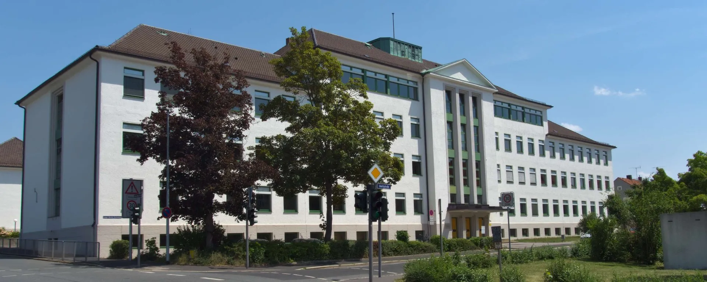
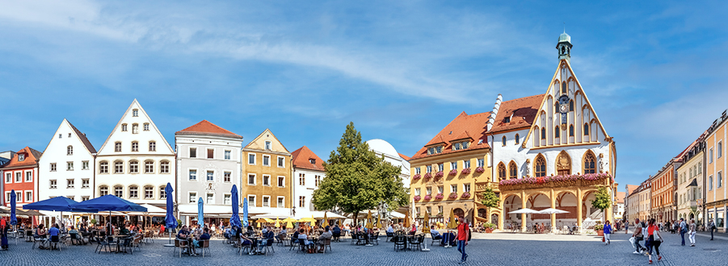

Über die P-Seminare
Seminare 2023/24
Im Schuljahr 2023/24 befassen sich vier der angebotenen fünf P-Seminare mit der Organisation der 66. Bayrischen Schultheatertage. Dabei kann man eigentlich gar nicht von vier unterschiedlichen Seminaren sprechen, sondern eher von einem großen Seminar, das in vier Arbeitsgruppen mit unterschiedlichen Zuständigkeitsbereichen aufgeteilt wurde. Im zwei- bis dreiwöchigen Abstand wird eine Versammlung im Plenum anberaumt, bei der der jeweilige Stand der Dinge den anderen Gruppen übermittelt werden. Diese Seminare bemühen sich um den reibungslosen Ablauf der Theatertage:

P-Seminar Verpflegung
- Leitung: OStRin Elke Leibig
- Dieses Projektseminar sorgt für das leibliche Wohl der Gäste an unserer Schule sowohl in der Schule als auch bei den Veranstaltungen außerhalb des Schulgeländes. Dabei nehme die Schüler Kontakt mit ortsansässigen Gastronomen auf, führen Verhandlung und stellen einen Verpflegungsplan auf bzw. prüfen und verbessern ihn.
P-Seminar Organisation
- Leitung: StD Claudia Ried
- In dieser Arbeitsgruppe laufen alle Stricke zusammen. Die Schüler koordinieren die finanzielle und zeitliche Planung, sowie die Kommunikation und Zusammenarbeit zwischen den anderen Untergruppen. Außerdem ist ein Aufgabenbereich das Kontaktieren von Sponsoren. In diesem Seminar lernen die Schüler nachhaltiges Handeln mit den verfügbaren Ressourcen und auch die Kommunikation auf Augenhöhe.
P-Seminar Public Relations
- Leitung: OStRin Bettina Wagner
- Die Schüler, die sich für dieses Seminar entschieden haben, sorgen für die Öffentlichkeitsarbeit, also z.B. eine ansprechende Gestaltung einer Homepage und sozialer Medien, sie kontaktieren Schirmherren der Veranstaltung sowie Hotels für die Unterbringung der Lehrkräfte. Auch Logos bzw. T-Shirts für die Mitwirkenden werden auch in gemeinsamen Diskussionen entwickelt und gestaltet. Die Schüler lernen hier, mit einem ansprechenden Maß an Höflichkeit zu kommunizieren.
P-Seminar Information und Werbung
- Leitung: OstRin Tanja Luckner
- In Zusammenarbeit mit Frau Luckner beschäftigen sich die Schüler mit dem Brandschutz und der Sicherheit, für die bei der Veranstaltung gesorgt werden muss, sowie der Ausschilderung in der Schule, damit unsere Gäste zu ihrem Ziel finden. Außerdem treten die Schüler mit dem Ordnungsamt in Kontakt, um notwendige Formalitäten zu klären. Zu guter Letzt liegt auch noch das Vorbereiten von Süßigkeiten-Päckchen als Wegzehrung für dir Heimreise für die Gäste an der Schule in ihrem Aufgabenbereich. Auch hier lernt man, in angemessenem Ton mit Ämtern zu kommunizieren, sowie sinnvolle Pläne für die Logistik der Theatertag zu erstellen.
Fazit
Insgesamt kann man sagen, dass durch eine gekonnte Koordinierung und Anleitung durch die Lehrkräfte und das große Engagement der Schüler:innen so ein gelungenes Projekt und Festival auf die Beine gestellt werden kann.
Über das GMG
Gregor-Mendel-Gymnasium
Moritzstraße Amberg. Eigentlich eine unscheinbare Straße in einem Wohngebiet, rechts Reihenhäuser und links Mietwohnblocks. Doch kommt man ans Ende der Straße, so ist auf der rechten Seite ein doch recht großes Gebäude zu sehen, das Gregor-Mendel-Gymnasium. Dabei war das Gregor-Mendel-Gymnasium natürlich nicht schon immer das, was es jetzt ist. Deshalb geben wir euch einen Einblick in seine Geschichte und anschließend eine kurze Info zu unserem Namensgeber, Gregor Mendel.
Die Geschichte
1833 wurde das GMG gegründet, damals noch unter dem Namen Königliche Landwirtschafts- und Gewerbeschule. Geläufig war der Name Gewerbeschule, als man 1864 eine Handelsabteilung angliederte. 1877 wurde das GMG dann eine Realschule, da es in diesem Jahr zu einer sechsklassigen Anstalt wurde, d.h. es wurde eine sechsjährige Schullaufbahn, die Schüler am GMG durchliefen. 1925 wurde die Schule aufgrund gewachsener Schülerzahlen zur Oberrealschule ausgebaut, die damals erst zweite in der Oberpfalz. Während des zweiten Weltkrieges diente das Schulgebäude zeitweise als Lazarett bzw. als Lungenkrankenhaus. Im Februar 1946, 9 Monate nach Kriegsende, konnte der Schulbetrieb wieder aufgenommen werden und 1947 gab es den ersten Nachkriegsabiturjahrgang, bestehend aus 102 Abiturient*innen unterschiedlichsten Alters. 1965 wurden auf Veranlassung des damaligen Kultusministers Ludwig Huber alle bayrischen Oberrealschulen in Gymnasium umbenannt, in unserem Fall zu „Gregor-Mendel-Gymnasium“. Schließlich wurde Mitte der 1970er Jahre aufgrund enorm hoher Schülerzahlen der Bau der Dreifachturnhalle und des sog. Neubaus genehmigt, von dem die Schule bis heute profitiert.
Gregor Mendel
Gregor Mendel wurde 1822 in Heinzendorf bei Odrau geboren, das liegt im heutigen Tschechien und war damals ein Teil von Österreich. Er besuchte das Troppauer Gymnasium und studierte danach Philosophie an der Universität zu Olmütz. Danach trat er dem Mönchsorden der Augustiner in Alt Brünn bei, später studierte er noch Lehramt, wobei er die Abschlussprüfung nicht bestand, was ihn aus ungeklärten Gründen dazu veranlasste sich mit der Vererbung auseinanderzusetzen. Dabei stellte er die berühmten Mendelschen Vererbungsregeln auf. Und zwar die Uniformitätsregel, die Spaltungsregel und die Unabhängigkeitsregel.
Über Amberg
Amberg
1034 – Nein, das sind nicht die stolzen Versuche eines Kindergartenkindes zu zählen, sondern die Zahl bezeichnet die wohl wichtigste Jahreszahl in der Geschichte Ambergs. Denn im Jahre 1034 wurde Amberg das erste Mal urkundlich erwähnt, somit existiert Amberg seit (mindestens) 989 Jahren. An dieser Stelle möchten wir euch einen kurzen (wirklich nur kurzen, ich weiß selbst, wie sehr Kinder und Jugendliche Geschichte normalerweise interessiert 😉) Überblick über die Geschichte Ambergs geben.
Die Geschichte
Amberg erhielt 1294 – 260 Jahre nach der ersten urkundlichen Erwähnung – das Stadtrecht. Die Jahrhunderte danach waren geprägt vom Eisenbergbau und -handel. Das Eisen wurde meist nach Regensburg “getreidelt” (Eine spezielle Transportart, bei der Schiffe von Pferden am Flussufer der Vils gezogen wurden), von wo die Schiffe Salz wieder nach Amberg brachten. Zu dieser Zeit war Amberg auch die Hauptstadt der Oberpfalz, damals Obere Pfalz. Denn Amberg und die Region standen unter der Herrschaft der Wittelsbacher1, die zur Verwaltung der Oberen Pfalz Amberg als Hauptstadt einrichteten. Bis 1810 war Amberg Hauptstadt der Region und der dazugehörige Naabkreis eigenständig. In diesem Jahr wurde der Naabkreis und der Regenkreis (Hauptstadt Regensburg) war Regensburg Regierungssitz des Regenkreises und des eingegliederten Naabkreises, was ungefähr der heutigen Oberpfalz entspricht. Nachdem sich Amberg weitere ca. 100 Jahre später, wie die meisten deutschen Städte, unauffällig gegenüber dem NS-Regime gezeigt hat, beginnt sich nach dem 2. Weltkrieg das Amberg zu entwickeln, das wir heute kennen.
Amberg Heute
Heutzutage ist Amberg eine einmalige Stadt. Nirgendwo sonst sind eine historische Altstadt und Kultur so eng verbunden mit einem florierenden Nachtleben und einem modernen Stadtzentrum. Denn befindet man sich auf dem Marktplatz, so ist es nur ein 10-minütiger Fußmarsch bis ins Stadtmuseum. gleichzeitig ist man aber auch in 10 Minuten am hochmodernen Cineplex Kino Ambergs, wo junge Leute tagtäglich die neuesten Blockbuster – teilweise sogar in 4DX – genießen können. Des Weiteren hat Amberg ein großes kulinarisches Angebot vorzuweisen, von griechischer, über italienische oder mexikanischer bis hin zu asiatischer und natürlich klassisch-bayrischer Küche findet man so ziemlich alles, was das Herz begehrt, in Amberg. Sowohl was das Kulinarische angeht als auch alles andere.
Ob Kulturangebote im ACC (Amberger Congress Centrum), das sich von Klassischen Konzerten oder Ballett bis zu Musicals oder Comedyshows erstreckt, im ACC findet so ziemlich jede Bühnenshow statt, die man sich vorstellen kann. Wenn man eher eine sportliche Aktivität sucht, so wird man auch hier fündig. Im Winterhalbjahr findet jeden Samstagabend der Discolauf in der Amberger Eishalle statt, der gerade bei Jugendlichen sehr beliebt ist oder aber man geht in der Amberger Bowlingwelt Bowlen, Billard oder Dart spielen. Unser Kurfürstenbad darf man natürlich auch nicht vergessen, in dem jeder vom Sportschwimmer zum Warmwasserplanscher etwas findet. Auch im Sommer bzw. Frühlingshalbjahr gibt es viele – vor allem Outdoor – Aktivitäten. Sehr zu empfehlen ist hier vor allem ein Spaziergang durch das Landesgartenschaugelände oder eine Partie Beachvolleyball im Hockermühlbad, liebevoll von uns Ambergern “Hocko” genannt. Ein weiteres Highlight des Amberger Stadtlebens sind zweifelsfrei die vielen Volksfeste. Im Laufe des Jahres wird in Amberg das Altstadtfest, das Mariahilfbergfest, der Mittelaltermarkt und zahlreiche Kirwen3 gefeiert.
Fazit
Alles in allem lässt sich sagen, dass Amberg eine großartige Stadt ist, deren Besuch sich definitiv lohnt!